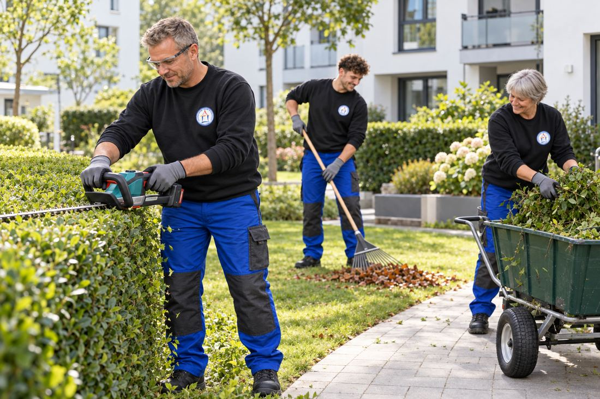

KARRIERE BEI HMZ · MINIJOB
Garten- und Außenanlagenpflege (m/w/d) – Minijob
Du suchst einen abwechslungsreichen Minijob in der Garten- und Außenanlagenpflege mit Winterdienst in einem familiären Unternehmen? Dann bist du bei der Hausmeisterzentrale Jüstel & Gebäudeservice genau richtig.

Das bieten wir dir
- Feste Einsatztage mit flexibler Abstimmung
- Kurze Einsatzwege, überwiegend in Leegebruch und Umgebung
- Arbeitsbeginn und Arbeitsende immer an unserem Firmenstandort
- Firmenfahrzeuge während der Arbeitszeit
- Arbeitskleidung wird gestellt
- Sämtliche Werkzeuge und Arbeitsmittel werden gestellt
- Kostenlose Getränke und Kaffee
- Regelmäßige gemeinsame Frühstücke und Teammeetings
- Gemeinsame Aktivitäten wie Grillen, Bootstouren, Bowling und Weihnachtsfeier
- Familiäres Betriebsklima mit kurzen Entscheidungswegen
Im Sommer sind die Arbeitszeiten bei Bedarf flexibel abstimmbar. Im Gegenzug erwarten wir während der Wintersaison die Bereitschaft zum Winterdienst. Dazu gehören bei entsprechender Wetterlage auch Einsätze früh morgens sowie an Wochenenden und Feiertagen.
Deine Aufgaben
- Betreuung und Pflege unserer Objekte
- Kleinere Reparaturen und handwerkliche Arbeiten
- Garten- und Außenanlagenpflege, zum Beispiel Heckenschnitt und Laubarbeiten
- Unterstützung bei der allgemeinen Objektbetreuung
- Winterdienst während der Saison
Das solltest du mitbringen
Wir suchen zuverlässige und handwerklich geschickte Mitarbeiter. Ein Führerschein Klasse B sowie die Bereitschaft zum Winterdienst sind erforderlich.
Interesse?
Dann schick uns einfach eine kurze Bewerbung per E-Mail an
bewerbung@hmz-ohv.de.
Ein ausführliches Anschreiben ist nicht erforderlich. Ein kurzer Lebenslauf reicht zunächst aus.
Anschließend melden wir uns bei dir und vereinbaren einen persönlichen Termin.
Wir freuen uns darauf, dich kennenzulernen.